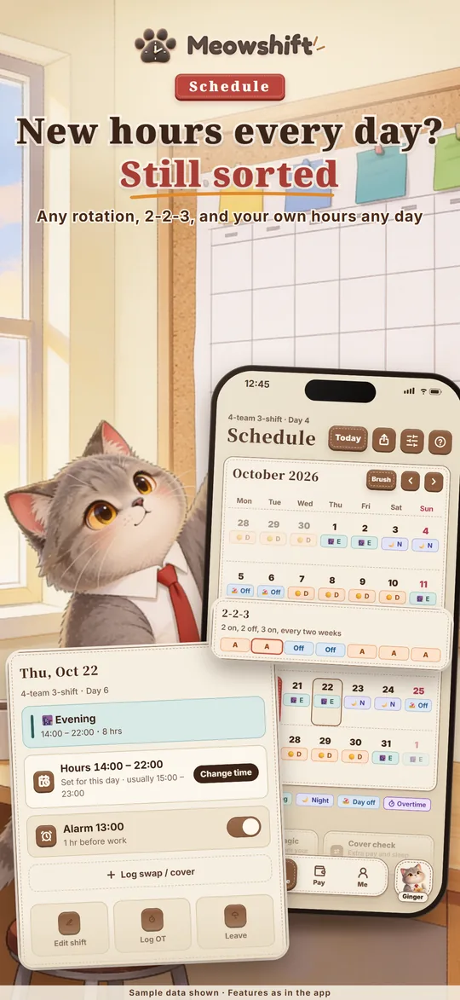

🎁 Całe PRO przez pierwsze 7 dni


Meowshift jest dla osób pracujących na zmiany: pielęgniarek, opiekunów, pracowników fabryk i sklepów, ochrony, hotelarstwa i gastronomii, a także dorabiających. Wpisz zmiany i zobacz, w które dni pracujesz, o której kończysz i ile mniej więcej zarobisz w tym miesiącu.





🎁 Całe PRO przez pierwsze 7 dni: wszystkie funkcje PRO są za darmo przez 7 dni od pobrania, bez płatności i bez automatycznego obciążenia. Potem możesz dalej korzystać za darmo z podstawowych funkcji albo wykupić subskrypcję Meowshift PRO.

Ceny zależą od kraju; obowiązuje cena widoczna w App Store lub Google Play. Subskrypcja odnawia się automatycznie i możesz ją anulować w sklepie w każdej chwili.
Wyliczenia mają charakter orientacyjny; wiążący jest pasek wypłaty od pracodawcy.